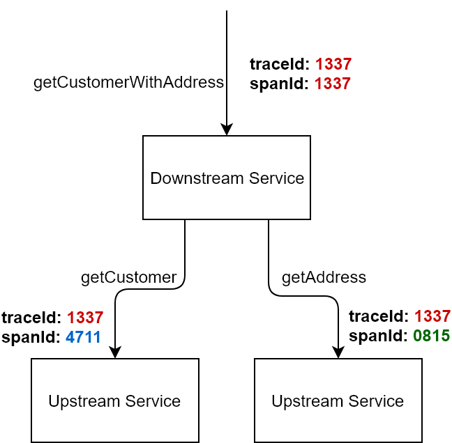
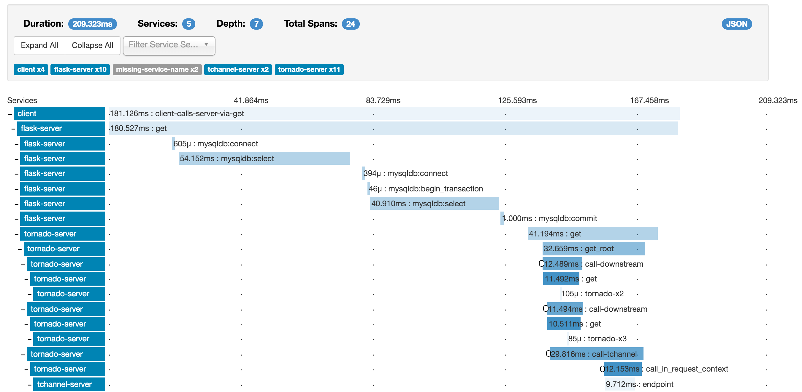

在 Dubbo 中使用 Zipkin
随着业务的发展，应用的规模不断的扩大，传统的应用架构无法满足诉求，服务化架构改造势在必行，以 Dubbo 为代表的分布式服务框架成为了服务化改造架构中的基石。随着微服务理念逐渐被大众接受，应用进一步向更细粒度拆分，并且，不同的应用由不同的开发团队独立负责，整个分布式系统变得十分复杂。没有人能够清晰及时的知道当前系统整体的依赖关系。当出现问题时，也无法及时知道具体是链路上的哪个环节出了问题。
在这个背景下，Google 发表了 Dapper 的论文，描述了如何通过一个分布式追踪系统解决上述问题。基于该论文，各大互联网公司实现并部署了自己的分布式追踪系统，其中比较出名的有阿里巴巴的 EagleEye。本文中提到的 Zipkin 是 Twitter 公司开源的分布式追踪系统。下面会详细介绍如何在 Dubbo 中使用 Zipkin 来实现分布式追踪。
Zipkin 简介
Zipkin 是基于 Dapper 论文实现，由 Twitter 开源的分布式追踪系统，通过收集分布式服务执行时间的信息来达到追踪服务调用链路、以及分析服务执行延迟等目的。
Zipkin 架构

Collector 收集器、Storage 存储、API、UI 用户界面等几部分构成了 Zipkin Server 部分，对应于 GitHub 上 openzipkin/zipkin 这个项目。而收集应用中调用的耗时信息并将其上报的组件与应用共生，并拥有各个语言的实现版本，其中 Java 的实现是 GitHub 上 openzipkin/brave。除了 Java 客户端实现之外，openzipkin 还提供了许多其他语言的实现，其中包括了 go、php、JavaScript、.net、ruby 等，具体列表可以参阅 Zipkin 的 Exiting instrumentations。
Zipkin 的工作过程
当用户发起一次调用时，Zipkin 的客户端会在入口处为整条调用链路生成一个全局唯一的 trace id，并为这条链路中的每一次分布式调用生成一个 span id。span 与 span 之间可以有父子嵌套关系，代表分布式调用中的上下游关系。span 和 span 之间可以是兄弟关系，代表当前调用下的两次子调用。一个 trace 由一组 span 组成，可以看成是由 trace 为根节点，span 为若干个子节点的一棵树。

Span 由调用边界来分隔，在 Zipkin 中，调用边界由以下四个 annotation 来表示：
- cs - Clent Sent 客户端发送了请求
- sr - Server Receive 服务端接受到请求
- ss - Server Send 服务端处理完毕，向客户端发送回应
- cr - Client Receive 客户端收到结果
显然，通过这四个 annotation 上的时间戳，可以轻易的知道一次完整的调用在不同阶段的耗时，比如：
- sr - cs 代表了请求在网络上的耗时
- ss - sr 代表了服务端处理请求的耗时
- cr - ss 代表了回应在网络上的耗时
- cr - cs 代表了一次调用的整体耗时
Zipkin 会将 trace 相关的信息在调用链路上传递，并在每个调用边界结束时异步的把当前调用的耗时信息上报给 Zipkin Server。Zipkin Server 在收到 trace 信息后，将其存储起来，Zipkin 支持的存储类型有 inMemory、MySql、Cassandra、以及 ElasticsSearch 几种方式。随后 Zipkin 的 Web UI 会通过 API 访问的方式从存储中将 trace 信息提取出来分析并展示，如下图所示：

在 Dubbo 中使用
由于 Brave 对 Dubbo 已经主动做了支持，在 Dubbo 中集成基于 Zipkin 的链路追踪变的十分简单。下面会按照 Brave 中关于 Dubbo RPC 支持的指引来说明如何在 Dubbo 中使用 Zipkin。
安装 Zipkin Server
按照 Zipkin 官方文档中的快速开始 来安装 Zipkin，如下所示：
$ curl -sSL https://zipkin.io/quickstart.sh | bash -s
$ java -jar zipkin.jar
按照这种方式安装的 Zipkin Server 使用的存储类型是 inMemory 的。当服务器停机之后，所有收集到的 trace 信息会丢失，不适用于生产系统。如果在生产系统中使用，需要配置另外的存储类型。Zipkin 支持 MySql、Cassandra、和 ElasticSearch。推荐使用 Cassandra 和 ElasticSearch，相关的配置请自行查阅官方文档。
本文为了演示方便，使用的存储是 inMemory 类型。成功启动之后，可以在终端看到如下的提示：
$ java -jar zipkin.jar
Picked up JAVA_TOOL_OPTIONS: -Djava.awt.headless=true
********
** **
* *
** **
** **
** **
** **
********
****
****
**** ****
****** **** ***
****************************************************************************
******* **** ***
**** ****
**
**
***** ** ***** ** ** ** ** **
** ** ** * *** ** **** **
** ** ***** **** ** ** ***
****** ** ** ** ** ** ** **
:: Powered by Spring Boot :: (v2.0.5.RELEASE)
...
o.s.b.w.e.u.UndertowServletWebServer : Undertow started on port(s) 9411 (http) with context path ''
2018-10-10 18:40:31.605 INFO 21072 --- [ main] z.s.ZipkinServer : Started ZipkinServer in 6.835 seconds (JVM running for 8.35)
然后在浏览器中访问 http://localhost:9411 验证 WEB 界面。
配置 Maven 依赖
引入 Brave 依赖
新建一个新的 Java 工程，并在 pom.xml 中引入 Brave 相关的依赖如下：
<properties>
<brave.version>5.4.2</brave.version>
<zipkin-reporter.version>2.7.9</zipkin-reporter.version>
</properties>
<dependencyManagement>
<dependencies>
<!-- 引入 zipkin brave 的 BOM 文件 -->
<dependency>
<groupId>io.zipkin.brave</groupId>
<artifactId>brave-bom</artifactId>
<version>${brave.version}</version>
<type>pom</type>
<scope>import</scope>
</dependency>
<!-- 引入 zipkin repoter 的 BOM 文件 -->
<dependency>
<groupId>io.zipkin.reporter2</groupId>
<artifactId>zipkin-reporter-bom</artifactId>
<version>${zipkin-reporter.version}</version>
<type>pom</type>
<scope>import</scope>
</dependency>
</dependencies>
</dependencyManagement>
<dependencies>
<!-- 1. brave 对 dubbo 的集成 -->
<dependency>
<groupId>io.zipkin.brave</groupId>
<artifactId>brave-instrumentation-dubbo-rpc</artifactId>
</dependency>
<!-- 2. brave 的 spring bean 支持 -->
<dependency>
<groupId>io.zipkin.brave</groupId>
<artifactId>brave-spring-beans</artifactId>
</dependency>
<!-- 3. 在 SLF4J 的 MDC (Mapped Diagnostic Context) 中支持 traceId 和 spanId -->
<dependency>
<groupId>io.zipkin.brave</groupId>
<artifactId>brave-context-slf4j</artifactId>
</dependency>
<!-- 4. 使用 okhttp3 作为 reporter -->
<dependency>
<groupId>io.zipkin.reporter2</groupId>
<artifactId>zipkin-sender-okhttp3</artifactId>
</dependency>
</dependencies>
其中：
- 引入 brave-instrumentation-dubbo-rpc，brave 对 dubbo 的支持：https://github.com/openzipkin/brave/blob/master/instrumentation/dubbo-rpc/README.md
- 引入 brave-spring-beans，brave 对 spring bean 的支持：https://github.com/openzipkin/brave/blob/master/spring-beans/README.md
- 引入 brave-context-slf4j，brave 对 SLF4J 的支持，可以在 MDC 中使用 traceId 和 spanId：https://github.com/openzipkin/brave/blob/master/context/slf4j/README.md
- 引入 zipkin-sender-okhttp3，使用 okhttp3 上报数据：https://github.com/openzipkin/zipkin-reporter-java
引入 Dubbo 相关依赖
Dubbo 相关的依赖是 Dubbo 本身以及 Zookeeper 客户端，在下面的例子中，我们将会使用独立的 Zookeeper Server 作为服务发现。
<dependencies>
<!-- 1. Zookeeper 客户端依赖 -->
<dependency>
<groupId>org.apache.curator</groupId>
<artifactId>curator-framework</artifactId>
<version>2.12.0</version>
<exclusions>
<exclusion>
<groupId>io.netty</groupId>
<artifactId>netty</artifactId>
</exclusion>
</exclusions>
</dependency>
<!-- 2. Dubbo 依赖 -->
<dependency>
<groupId>com.alibaba</groupId>
<artifactId>dubbo</artifactId>
<version>2.6.2</version>
</dependency>
</dependencies>
其中：
- Dubbo 这里依赖独立的 Zookeeper Server 做服务发现，这里使用的客户端是 Curator
- 引入 Dubbo 框架的依赖，原则上 2.6 的任何版本都是工作的，这里使用的是 2.6.2 版本
实现
我们这里构造的场景是一个有两个节点的服务依赖链，也就是，当一个 Dubbo 客户端调用服务 A 时，服务 A 将会继续调用服务 B。在这个例子中，服务 A 是 greeting service，它所依赖的下游服务服务 B 是 hello service。
定义服务接口
为此需要事先定义两个服务接口 GreetingService 以及 HelloService
-
com.alibaba.dubbo.samples.api.GreetingService
package com.alibaba.dubbo.samples.api; public interface GreetingService { String greeting(String message); } -
com.alibaba.dubbo.samples.api.HelloService
package com.alibaba.dubbo.samples.api; public interface HelloService { String hello(String message); }
实现服务接口
为了区分对待，所有和 HelloService 相关的实现代码都放在 hello 子包下，同理 GreetingService 相关的放在 greeting 子包下。
-
实现 com.alibaba.dubbo.samples.api.HelloService
package com.alibaba.dubbo.samples.service.hello; import com.alibaba.dubbo.samples.api.HelloService; import java.util.Random; public class HelloServiceImpl implements HelloService { @Override public String hello(String message) { try { // 通过 sleep 模拟业务逻辑处理时间 Thread.sleep(new Random(System.currentTimeMillis()).nextInt(1000)); } catch (InterruptedException e) { // no op } return "hello, " + message; } } -
实现 com.alibaba.dubbo.samples.api.GreetingService
package com.alibaba.dubbo.samples.service.greeting; import com.alibaba.dubbo.samples.api.GreetingService; import com.alibaba.dubbo.samples.api.HelloService; import java.util.Random; public class GreetingServiceImpl implements GreetingService { // 下游依赖服务，运行时靠 spring 容器注入 HelloService 的服务代理 private HelloService helloService; public void setHelloService(HelloService helloService) { this.helloService = helloService; } @Override public String greeting(String message) { try { // 通过 sleep 模拟业务逻辑处理时间 Thread.sleep(new Random(System.currentTimeMillis()).nextInt(1000)); } catch (InterruptedException e) { // no op } return "greeting, " + helloService.hello(message); } }这里需要注意的是，GreetingServiceImpl 的实现中声明了一个类型是 HelloService 的成员变量，并在 greeting 方法中，执行完自己逻辑之后又调用了 HelloService 上的 hello 方法。这里的 helloService 的实现将会在运行态由外部注入，注入的不是 HelloServiceImpl 的实现，而是 HelloService 的远程调用代理。通过这样的方式，完成了在一个 Dubbo 服务中继续调用另一个远程 Dubbo 服务的目的。从链路追踪的角度来说，客户端调用 GreetingService 是一个 span，GreetingService 调用 HelloService 是另一个 span，并且两者有父子关系，同属于一个 trace，也就是属于同一条调用链路。
另外，在 GreetingServiceImpl 和 HelloServiceImpl 的实现中，通过 Thread.sleep 来模拟了处理业务逻辑的耗时，以便在 Zipkin UI 上更好的展示。
配置
为了专注在展示如何使用 Zipkin 这一点上，本文在配置和编程模型上没有采用更多的高级技术，而是使用了最传统的 Spring XML 的配置方式，帮助读者理解。更高级的通过 annotation 甚至 spring boot 的方式，读者可以自行查阅 Dubbo 和 Zipkin 相关的文档。
-
暴露 HelloService 服务
在 resouces/spring/hello-service.xml 中增加以下的配置来将 HelloServiceImpl 暴露成一个 Dubbo 服务：
- 使用了本地启动的 Zookeeper Server 作为注册中心，地址为默认值 zookeeper://127.0.0.1:2181
- 用 Dubbo 原生服务在端口 20880 上暴露服务
- 将 HelloServiceImpl 注册成 id 是
helloService的 Spring Bean，这样就可以在后续的<dubbo:service>中引用到这个实现类 - 通过
<dubbo:service>将 HelloServiceImpl 暴露成 Dubbo 服务
<!-- 定义 HelloService 的应用名 --> <dubbo:application name="hello-service-provider"/> <!-- 指定注册中心地址 --> <dubbo:registry address="zookeeper://127.0.0.1:2181"/> <!-- 使用 Dubbo 原生协议在 20880 端口上暴露服务 --> <dubbo:protocol name="dubbo" port="20880"/> <!-- 将 HelloServiceImpl 的实现声明成一个 spring bean --> <bean id="helloService" class="com.alibaba.dubbo.samples.service.hello.HelloServiceImpl"/> <!-- 将 HelloServiceImpl 声明成一个 Dubbo 服务 --> <dubbo:service interface="com.alibaba.dubbo.samples.api.HelloService" ref="helloService"/> -
增加 Zipkin 相关的配置
在 resources/spring/hello-service.xml 中增加 Zipkin 相关的配置：
- 修改 dubbo 服务暴露的配置，添加 Zipkin 的 tracing filter 到 Dubbo 的 filter chain 中
- 按照 https://github.com/openzipkin/brave/blob/master/spring-beans/README.md 来配置 Zipkin 的 sender 和 tracing 的 spring bean
<!-- 1. 修改 dubbo 服务暴露配置，在 filter chain 中增加 zipkin 的 tracing 过滤器 --> <dubbo:service interface="com.alibaba.dubbo.samples.api.HelloService" ref="helloService" filter="tracing"/> <!-- 2. zipkin 相关的配置 --> <!-- 使用 OKHttp 来发送 trace 信息到 Zipkin Server。这里的 Zipkin Server 启动在本地 --> <bean id="sender" class="zipkin2.reporter.beans.OkHttpSenderFactoryBean"> <property name="endpoint" value="http://localhost:9411/api/v2/spans"/> </bean> <bean id="tracing" class="brave.spring.beans.TracingFactoryBean"> <property name="localServiceName" value="hello-service"/> <property name="spanReporter"> <bean class="zipkin2.reporter.beans.AsyncReporterFactoryBean"> <property name="sender" ref="sender"/> <!-- wait up to half a second for any in-flight spans on close --> <property name="closeTimeout" value="500"/> </bean> </property> <property name="currentTraceContext"> <bean class="brave.spring.beans.CurrentTraceContextFactoryBean"> <property name="scopeDecorators"> <bean class="brave.context.slf4j.MDCScopeDecorator" factory-method="create"/> </property> </bean> </property> </bean> -
增加 HelloService 的启动类
在 com.alibaba.dubbo.samples.service.hello.Application 中通过 ClassPathXmlApplicationContext 读取 刚才配置的 spring/hello-service.xml 来初始化一个 spring context 并启动
package com.alibaba.dubbo.samples.service.hello; import org.springframework.context.support.ClassPathXmlApplicationContext; import java.io.IOException; public class Application { public static void main(String[] args) throws IOException { ClassPathXmlApplicationContext context = new ClassPathXmlApplicationContext("spring/hello-service.xml"); context.start(); System.out.println("Hello service started"); // press any key to exit System.in.read(); } } -
暴露 GreetingService 服务，并使用 Zipkin
在 resources/spring/greeting-service.xml 中配置 GreetingService。相关步骤与 HelloService 类似，不再赘述，重点关注如何在 GreetingService 中配置下游服务的依赖。完整的 XML 配置如下：
<beans xmlns:xsi="http://www.w3.org/2001/XMLSchema-instance" xmlns:dubbo="http://dubbo.apache.org/schema/dubbo" xmlns="http://www.springframework.org/schema/beans" xsi:schemaLocation="http://www.springframework.org/schema/beans http://www.springframework.org/schema/beans/spring-beans.xsd http://dubbo.apache.org/schema/dubbo http://dubbo.apache.org/schema/dubbo/dubbo.xsd"> <!-- 1. 定义 GreetingService 的应用名 --> <dubbo:application name="greeting-service-provider"/> <!-- 2. 指定注册中心地址 --> <dubbo:registry address="zookeeper://127.0.0.1:2181"/> <!-- 3. 使用 Dubbo 原生协议在 20881 端口上暴露服务 --> <dubbo:protocol name="dubbo" port="20881"/> <!-- 4. 声明 HelloService 的远程代理，并在 Dubbo 的 filter chain 中增加 tracing filter --> <dubbo:reference id="helloService" check="false" interface="com.alibaba.dubbo.samples.api.HelloService" filter="tracing"/> <!-- 5. 将 GreetingServiceImpl 的实现声明成一个 spring bean，并将 HelloService 的远程代理装配进去 --> <bean id="greetingService" class="com.alibaba.dubbo.samples.service.greeting.GreetingServiceImpl"> <property name="helloService" ref="helloService"/> </bean> <!-- 6. 将 GreetingServiceImpl 声明成一个 Dubbo 服务，并在 Dubbo 的 filter chain 中增加 tracing filter --> <dubbo:service interface="com.alibaba.dubbo.samples.api.GreetingService" ref="greetingService" filter="tracing"/> <!-- 7. zipkin 相关的配置 --> <bean id="sender" class="zipkin2.reporter.beans.OkHttpSenderFactoryBean"> <property name="endpoint" value="http://localhost:9411/api/v2/spans"/> </bean> <bean id="tracing" class="brave.spring.beans.TracingFactoryBean"> <property name="localServiceName" value="greeting-service"/> <property name="spanReporter"> <bean class="zipkin2.reporter.beans.AsyncReporterFactoryBean"> <property name="sender" ref="sender"/> <!-- wait up to half a second for any in-flight spans on close --> <property name="closeTimeout" value="500"/> </bean> </property> <property name="currentTraceContext"> <bean class="brave.spring.beans.CurrentTraceContextFactoryBean"> <property name="scopeDecorators"> <bean class="brave.context.slf4j.MDCScopeDecorator" factory-method="create"/> </property> </bean> </property> </bean> </beans>这里的配置与上面的 HelloService 类似，需要重点关注的有两点：
-
第 3 步中注意服务需要暴露在不同的端口上，否则会和 HelloService 冲突，本例中选择的是 20881 这个端口
-
通过第 4 步先声明 HelloService 的远程代理，然后在第 5 步中将其组装给 GreetingService 来完成服务上下游依赖的声明
增加 GreeeingService 的启动类，与 HelloService 类似，通过 spring/greeting-service.xml 的配置来初始化一个新的 spring context 来完成。
package com.alibaba.dubbo.samples.service.greeting; import org.springframework.context.support.ClassPathXmlApplicationContext; import java.io.IOException; public class Application { public static void main(String[] args) throws IOException { ClassPathXmlApplicationContext context = new ClassPathXmlApplicationContext("spring/greeting-service.xml"); context.start(); System.out.println("Greeting service started"); // press any key to exit System.in.read(); } } -
-
实现客户端
通过 resources/spring/client.xml 初始化一个 spring context，从其中获取 GreetingService 的远程代理，发起远程调用。
package com.alibaba.dubbo.samples.client; import com.alibaba.dubbo.samples.api.GreetingService; import org.springframework.context.support.ClassPathXmlApplicationContext; public class Application { public static void main(String[] args) { ClassPathXmlApplicationContext context = new ClassPathXmlApplicationContext("spring/client.xml"); context.start(); // 获取远程代理并发起调用 GreetingService greetingService = (GreetingService) context.getBean("greetingService"); System.out.println(greetingService.greeting("world")); } }resource/spring/client.xml 中的配置与 Dubbo 服务的配置类似，主要是配置远程代理，以及配置 Zipkin
<beans xmlns:xsi="http://www.w3.org/2001/XMLSchema-instance" xmlns:dubbo="http://dubbo.apache.org/schema/dubbo" xmlns="http://www.springframework.org/schema/beans" xsi:schemaLocation="http://www.springframework.org/schema/beans http://www.springframework.org/schema/beans/spring-beans.xsd http://dubbo.apache.org/schema/dubbo http://dubbo.apache.org/schema/dubbo/dubbo.xsd"> <!-- 1. 定义 dubbo 客户端的应用名 --> <dubbo:application name="dubbo-client"/> <!-- 2. 指定注册中心地址 --> <dubbo:registry address="zookeeper://127.0.0.1:2181"/> <!-- 3. 声明 GreetingService 的远程代理，并在 Dubbo 的 filter chain 中增加 tracing filter --> <dubbo:reference id="greetingService" check="false" interface="com.alibaba.dubbo.samples.api.GreetingService" filter="tracing"/> <!-- 4. zipkin 相关的配置 --> <bean id="sender" class="zipkin2.reporter.beans.OkHttpSenderFactoryBean"> <property name="endpoint" value="http://localhost:9411/api/v2/spans"/> </bean> <bean id="tracing" class="brave.spring.beans.TracingFactoryBean"> <property name="localServiceName" value="client"/> <property name="spanReporter"> <bean class="zipkin2.reporter.beans.AsyncReporterFactoryBean"> <property name="sender" ref="sender"/> <!-- wait up to half a second for any in-flight spans on close --> <property name="closeTimeout" value="500"/> </bean> </property> <property name="currentTraceContext"> <bean class="brave.spring.beans.CurrentTraceContextFactoryBean"> <property name="scopeDecorators"> <bean class="brave.context.slf4j.MDCScopeDecorator" factory-method="create"/> </property> </bean> </property> </bean> </beans>
完成之后的工程的目录结构如下：

运行
现在让我们把整个链路运行起来，看看 Zipkin 链路追踪的效果。
启动 Zookeeper Server
执行以下命令在本地启动一个 Zookeeper Server，如果没有安装，请自行从 ZooKeeper 官网 下载：
$ zkServer start
启动 Zipkin Server
执行以下命令在本地启动一个 Zipkin Server：
$ curl -sSL https://zipkin.io/quickstart.sh | bash -s
$ java -jar zipkin.jar
启动 HelloService
使用下面的命令启动 HelloService，当然也可以直接在 IDE 中启动：
$ mvn exec:java -Dexec.mainClass=com.alibaba.dubbo.samples.service.hello.Application
启动成功后应该可以在终端上看到 “Hello service started” 的字样。
启动 GreetingService
使用下面的命令启动 GreetingService，当然也可以直接在 IDE 中启动：
$ mvn exec:java -Dexec.mainClass=com.alibaba.dubbo.samples.service.greeting.Application
启动成功后应该可以在终端上看到 “Greeting service started” 的字样。
运行 Dubbo 客户端
使用下面的命令运行 Dubbo 客户端向 GreetingService 发起远程调用，当然也可以直接在 IDE 中运行：
$ mvn exec:java -Dexec.mainClass=com.alibaba.dubbo.samples.client.Application
执行成功后，客户端会在终端上输出 “greeting, hello, world”。
链路追踪
打开浏览器访问 "http://localhost:9411" 并通过 "Find Traces" 按钮来搜索，可以找到刚刚调用的链路追踪，效果如下图所示：

还可以进一步的选择每一个 span 来查看本次调用边界内的详情，比如，hello-service 这个 span 的详情如下：

总结
本文介绍了链路追踪的基本概念以及 Zipkin 的基本用法，然后用 Dubbo 构建了一条最简单的调用链路，并引入了 Zipkin 做全链路追踪。由于 Zipkin 对 Dubbo 做了很好的支持，整个集成的过程还是十分简单明了的。
Zipkin 对 Dubbo 的支持是构建在 Dubbo 的 filter 扩展机制上的，有兴趣的读者可以通过 https://github.com/openzipkin/brave/blob/master/instrumentation/dubbo-rpc/src/main/java/brave/dubbo/rpc/TracingFilter.java 了解其实现细节。
本文中涉及的例子可以从 https://github.com/dubbo/dubbo-samples 中的 "dubbo-samples-zipkin" 子模块中获取。另外，spring-cloud-sleth 2.0 中开始 正式支持 Dubbo，相关的文章和例子后续计划提供。